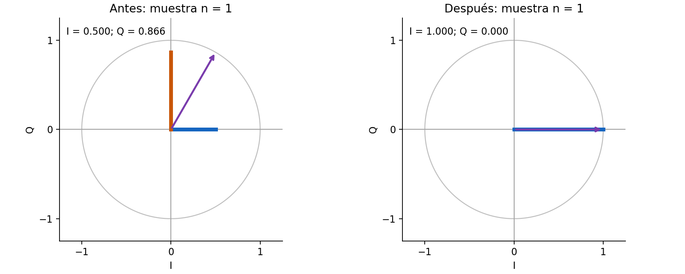
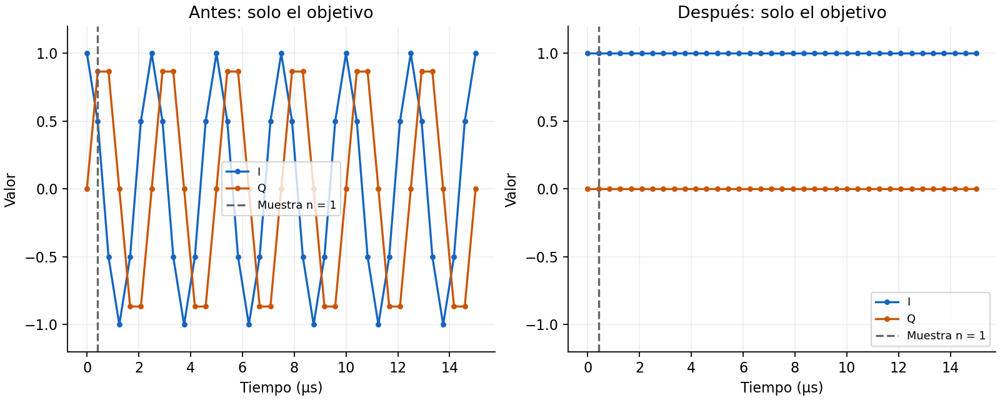
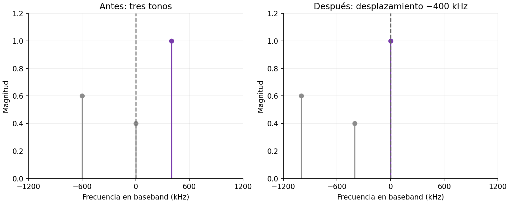

Mezcla compleja, muestra por muestra
- Propósito: relacionar una misma señal con su flecha en el plano I/Q, sus muestras en el tiempo y su espectro.
- Pregunta principal: ¿por qué un tono de +400 kHz puede quedar como I = 1 y Q = 0 después de centrarlo, y por qué ese resultado no se aplica a cualquier señal?
- Alcance: ampliación opcional hacia S04, vinculada al avance de la sección 6.6. No necesita dongle ni archivos
.cu8.
Recorrido guiado
- 1. Sin mezcla: al avanzar las muestras, las dos flechas se mueven igual. No se ha cambiado la señal.
- 2. Centrar en 0 Hz: la flecha de entrada sigue girando; la de salida queda fija. Se canceló la frecuencia del tono, no la cuadratura entre los ejes I y Q.
- 3. Fase de 45°: la salida sigue centrada, pero ahora I y Q son distintas de cero. Centrar no significa eliminar Q.
- 4. Con modulación: incluso después de centrar el canal, su flecha y sus componentes siguen cambiando. Esa variación no se elimina con la mezcla.
Los controles se activan con JavaScript. Si no está disponible, las imágenes muestran el caso estático: tono de +400 kHz, mezcla de −400 kHz, fase inicial 0° y muestra n = 1.
La reproducción avanza 5 muestras por segundo para observarlas. El sample rate del modelo sigue siendo 2.4 MS/s; no es una reproducción en tiempo real. Después de n = 36 se vuelve a n = 0.
Antes, x₀[n]
Después, y₀[n]
Frecuencia del tono o centro de la banda: entrada + mezcla
Fase de esta muestra: entrada + mezcla = salida
1. Una muestra es un punto con dos coordenadas

Figura 1. Una misma muestra del objetivo antes y después de la mezcla, con sus proyecciones sobre los ejes I y Q.
- Flecha izquierda: representa la muestra de entrada. Su posición horizontal es I y su posición vertical es Q.
- Flecha derecha: representa la muestra después de multiplicarla por el oscilador complejo.
- Caso estático: en n = 1, la entrada tiene fase 60°. La mezcla añade −60°, por lo que la salida tiene fase 0°.
- Longitud: vale 1 antes y después. No se aumenta la amplitud ni se elimina una rama.
Comprobación
- Se selecciona «3. Fase de 45°». ¿La flecha centrada queda sobre el eje I? ¿Q desaparece?
Solución explicada
- La mezcla cancela el cambio de fase debido a +400 kHz, pero conserva la fase inicial de 45°.
- La salida es \(e^{j\pi/4}=\cos(\pi/4)+j\sin(\pi/4)\).
- I y Q valen aproximadamente 0.707. La flecha queda entre ambos ejes; no sobre el eje I.
- Centrar la frecuencia no obliga a que Q sea cero. El caso I = 1, Q = 0 requiere además fase inicial cero y amplitud 1.
2. Las curvas I/Q son las coordenadas de esa flecha

Figura 2. Las componentes I y Q del objetivo durante 37 muestras; la línea vertical identifica la muestra del plano I/Q.
- Azul: valores I, es decir, las posiciones horizontales de la flecha.
- Naranja: valores Q, es decir, las posiciones verticales de la misma flecha.
- Antes: el tono gira y sus coordenadas cambian. No son dos señales de radio distintas.
- Después: para el tono puro con fase inicial cero, la flecha queda fija en (1, 0). Por eso las curvas son horizontales.
Comprobación
- Se selecciona «2. Centrar en 0 Hz», se cambia la fase inicial a 90° y se avanzan varias muestras. ¿Qué valores deberían mantenerse?
Solución explicada
- Para un tono puro centrado, \(y_0[n]=e^{j\phi}\). Ya no hay un término de fase que crezca con n.
- Con \(\phi=90°=\pi/2\), I es \(\cos(\pi/2)=0\) y Q es \(\sin(\pi/2)=1\).
- Las dos curvas siguen siendo constantes, pero ahora la componente no nula es Q.
- No hay un traslado obligatorio de toda la señal a I: la orientación final depende de la fase inicial.
3. El espectro permite comprobar el desplazamiento

Figura 3. Espectros del bloque completo antes y después de la mezcla; centrar el objetivo no elimina las otras componentes.
- Objetivo: el tono original de +400 kHz se representa en morado.
- Otros tonos: aparecen en gris y también se desplazan −400 kHz. No desaparecen.
- Distinción importante: esta figura puede mostrar los tres tonos; las dos figuras anteriores muestran solamente el objetivo, aislado por construcción.
- Línea vertical: indica una frecuencia presente; no representa un pulso en el tiempo.
Comprobación
- Se selecciona «4. Con modulación» y se desmarca «Incluir los otros dos tonos en el espectro». Si el centro está en 0 Hz, ¿por qué siguen variando I y Q?
Solución explicada
- El objetivo modulado se representa como \(x_0[n]=s[n]e^{j2\pi f_0n/f_s}\).
- La mezcla con \(f_{\mathrm{mix}}=-f_0\) cancela el factor de desplazamiento y deja \(y_0[n]=s[n]\).
- En este ejemplo FM, \(s[n]=e^{j[\phi+1.2\sin(2\pi\,100000\,n/f_s)]}\). La fase de la modulación cambia entre muestras.
- Por eso I y Q siguen variando y el espectro conserva varias componentes alrededor de cero. No toda la banda se transforma en una sola componente DC.
- Desmarcar los otros tonos cambia la señal sintética del ejemplo. No implementa un filtro ni demuestra que la mezcla seleccione el canal.
Qué se calcula y qué no
- Sample rate: \(f_s=2.4\) MS/s, fijo. El avance lento de la interfaz no lo modifica.
- Tono puro: \(x_0[n]=e^{j(2\pi f_0n/f_s+\phi)}\), de magnitud 1.
- Mezcla: \(y_0[n]=x_0[n]e^{j2\pi f_{\mathrm{mix}}n/f_s}\). Se suman fases; no se anula la separación de 90° entre las referencias I/Q.
- Otros tonos: están en −600 y 0 kHz, con amplitudes 0.6 y 0.4. Una coincidencia con el objetivo muestra la suma compleja de sus contribuciones.
- Bloque del espectro: 240 muestras, duración 100 µs y separación entre bins de 10 kHz. La interfaz calcula una DFT directa normalizada; una FFT del mismo bloque obtiene los mismos coeficientes. Se omiten residuos numéricos menores que \(10^{-7}\), no señales de una captura real.
- FM didáctica: el mensaje es un coseno de frecuencia \(f_m=100\) kHz. El índice de modulación es \(\beta=1.2\), sin unidades.
- Desviación: \(\Delta f=\beta f_m=120\) kHz. Este valor permite observar la variación en la interfaz; no es la referencia de 75 kHz del laboratorio.
- Límite: centrar no equivale a filtrar, decimar ni demodular. La recuperación del mensaje necesita etapas adicionales.
Por qué la fórmula representa FM
- Fase: el modelo continuo del objetivo es \(\theta(t)=2\pi f_0t+\phi+\beta\sin(2\pi f_mt)\), con \(t\) en segundos y \(\theta(t)\) en radianes.
- Frecuencia instantánea: mide qué tan rápido cambia la fase. La derivada expresa esa rapidez:
- Mensaje: el coseno hace variar la frecuencia alrededor de \(f_0\). La fase contiene un seno porque acumula esa variación de frecuencia.
- Muestreo: la interfaz evalúa \(e^{j\theta(t)}\) en \(t=n/f_s\). Así obtiene las muestras de la fórmula anterior.
- Después de centrar: la mezcla elimina \(f_0\). Permanece la variación \(\Delta f\cos(2\pi f_mt)\); por eso I y Q siguen cambiando.
- Alcance: este ejemplo genera muestras sintéticas. No reproduce una emisora FM ni simula el filtro analógico de un receptor.